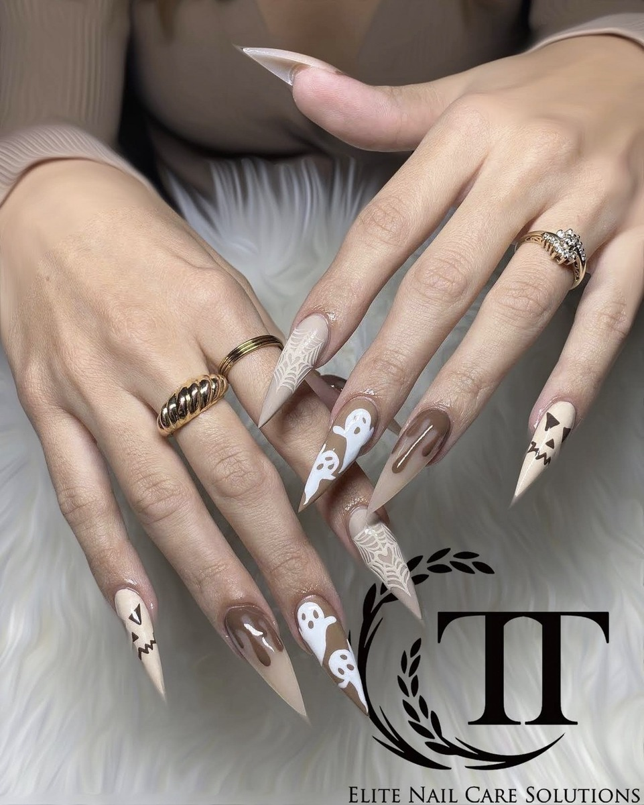

Choosing a nail shape is one of the most important decisions you'll make at the nail salon — it affects how long your fingers look, how practical your nails are day-to-day, and how well the nail art shows. At T-T Nails & Spa in Warrensburg, MO, we offer every nail shape below on natural nails, gel extensions, acrylics, and more. Let's break them all down.
1. Round Nails
 ✓ Most Practical
✓ Most Practical
Round
Round nails follow the natural curve of your fingertip, with straight sides and a gently rounded tip. They're the closest shape to how natural nails grow — which makes them the most comfortable, low-maintenance option available.
Round is the ideal starting point for first-time clients or anyone who is tough on their nails. It's also the most common shape for pedicure services.
Best for: Clients who prefer a natural look, work with their hands, are new to nail care, or want the lowest possible maintenance between appointments. Also perfect for children's first manicures.
2. Square Nails
 Classic Shape
Classic Shape
Square
Square nails have straight sides and a completely flat, horizontal tip — creating a clean, structured, geometric look. It's been a salon staple for decades and remains a popular choice for clients who love a bold, polished aesthetic.
Square is particularly popular for French tip manicures, where the flat tip creates a crisp, clean line. It works best on longer nails and fingers that are naturally long and slender.
Best for: Clients with naturally long, slender fingers who love a structured, professional look. Excellent for French tips, color-block nail art, and bold geometric designs.
3. Squoval Nails
 ✓ Most Versatile
✓ Most Versatile
Squoval
Squoval — a portmanteau of square and oval — is the most universally flattering nail shape available. It combines a mostly flat tip with softly rounded corners, giving you the clean structure of a square without the harsh angles that can snag or shorten the appearance of fingers.
If you've never been sure what nail shape to get, squoval is almost always a safe, beautiful answer. It works on virtually every finger type and length.
4. Oval Nails
 ⭐ Timeless Classic
⭐ Timeless Classic
Oval
Oval nails are the elegant, elongated cousin of round — the sides taper inward slightly and the tip is a smooth, continuous curve. The result is one of the most graceful, feminine nail shapes available, and a perennial favorite at T-T Nails & Spa.
Oval creates a noticeable elongating effect that makes fingers look slimmer and longer. It suits almost every finger type, but is especially flattering for short or wide fingers.
"At T-T Nails & Spa, almond and oval are our most requested shapes every single week — and for good reason. They flatter almost everyone."
5. Almond Nails ⭐ Most Popular
 ⭐ Most Requested 2026
⭐ Most Requested 2026
Almond
Almond nails taper on both sides toward a gently rounded point — mimicking the shape of an actual almond. It's the most popular nail shape at T-T Nails & Spa in 2026, and the most universally flattering shape we offer.
The tapered sides create a slimming effect on fingers of all lengths, and the slightly pointed tip draws the eye upward for maximum visual elongation. It looks stunning with any nail art, color, or finish.
6. Coffin / Ballerina Nails
 ✦ 2026 Trending
✦ 2026 Trending
Coffin / Ballerina
The coffin shape — also called ballerina because it resembles the silhouette of a ballet slipper — is long with tapered sides that come to a flat, squared-off tip. It's dramatic, modern, and one of the most requested extension shapes in 2026.
The tapered sides create a powerful slimming effect while the flat tip provides more canvas for elaborate nail art designs. It requires extensions to achieve the ideal length and shape.
Want One of These Shapes?
Walk in or call ahead — our technicians at T-T Nails & Spa will shape your nails perfectly for your fingers and lifestyle.
📞 Call (660) 747-22477. Stiletto Nails

✦ Most DramaticStiletto
Stiletto nails taper from a wide base to a sharp, pointed tip — creating the most dramatic nail shape available. Like the heel it's named after, stiletto nails are bold, fierce, and make an unforgettable statement.
This shape creates maximum visual length and is a favorite for editorial looks, special occasions, Halloween and holiday nail art, and anyone who loves a fierce, unapologetic aesthetic. Our Halloween ghost set above is a perfect example of what's possible on this shape.
Best for: Special occasions, photoshoots, bold fashion looks, Halloween, holiday nail art, and clients who love a fierce, high-fashion aesthetic. Works best with acrylic or gel extensions for maximum strength at the point.
8. Lipstick / Diagonal Nails
 ✦ Unique Style
✦ Unique Style
Lipstick / Diagonal
The lipstick shape — also called diagonal or asymmetric — is cut at an angle, just like the tip of a lipstick bullet. It's one of the more unconventional shapes but has grown a strong following among clients who love to stand out.
The angled tip creates a playful, artsy look that's quite unlike any other shape, making it a conversation starter every time. It's a bold choice for clients who want to express their unique personality through their nails.
9. Flare / Duck Nails
 ✦ Statement Shape
✦ Statement Shape
Flare / Duck
Flare nails — nicknamed "duck nails" because they resemble a duck's foot — widen dramatically at the tip, creating a fan-like silhouette. The base is narrow and the tip flares out significantly wider, often seen in vibrant colors and bold nail art.
This is one of the most statement-making shapes available and was popularized in the custom nail art community. It's a shape for clients who want their nails to be unmistakably noticed.
10. Edge / Mountain Peak Nails
 ✦ Geometric
✦ Geometric
Edge / Mountain Peak
Edge nails — also called mountain peak — come to a sharp, centered point like stiletto, but with straight angled sides rather than curved. The sides taper in straight diagonal lines meeting at a pointed center tip, creating a geometric, angular silhouette.
It's a more structured, architectural version of stiletto — perfect for clients who love sharp geometric aesthetics, bold fashion looks, and dramatic nail art with clean lines.
Compare All Nail Shapes
| Shape | Elongating | Durability | Maintenance | Extensions Needed? | Popularity 2026 |
|---|---|---|---|---|---|
| Round | Easy | No | ★★★ | ||
| Square | Easy | Optional | ★★★ | ||
| Squoval | Easy | No | ★★★★ | ||
| Oval | Easy | Optional | ★★★★★ | ||
| Almond ⭐ | Medium | Optional | ★★★★★ | ||
| Coffin | Medium | Yes | ★★★★★ | ||
| Stiletto | High | Yes | ★★★★ | ||
| Lipstick | Medium | Optional | ★★ | ||
| Flare / Duck | High | Yes | ★★ | ||
| Edge | High | Yes | ★★ |
🎯 Find Your Perfect Shape
Answer these quick questions and we'll recommend the best shape for you:
Frequently Asked Questions
What is the most popular nail shape in 2026?
What nail shape lasts the longest without breaking?
Can I change my nail shape at each appointment?
What nail shape is best for nail art?
Do you offer all nail shapes at T-T Nails & Spa in Warrensburg?
Book Your Perfect Nail Shape in Warrensburg, MO
No matter which shape catches your eye — from the universally flattering almond to the dramatic stiletto — our expert team at T-T Nails & Spa will shape your nails to perfection. We'll assess your natural nail shape, finger length, and lifestyle to make sure you leave with nails you absolutely love.
Find us at 1125 N. Simpson Dr. Ste L, Warrensburg, MO 64093 — open Monday through Saturday, 9:00 AM – 7:00 PM. Walk-ins always welcome, or call (660) 747-2247 to book your appointment.